Proizvajamo plastične izdelke in polizdelke po zahtevah naročnikov. Nudimo tudi digitalni tisk, tampotisk in 3D-tisk.
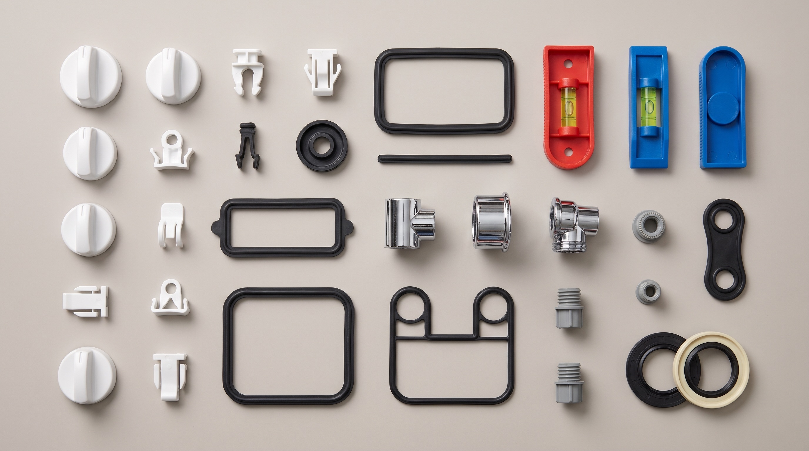
Za izdelavo malih gospodinjskih aparatov in bele tehnike po zahtevah naročnikov izdelujemo polizdelke iz termoplastov in termoplastičnih elastomerov. Med kupci so Hisense Gorenje in BSH Hišni aparati.
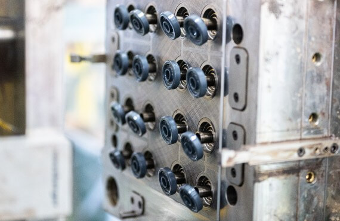
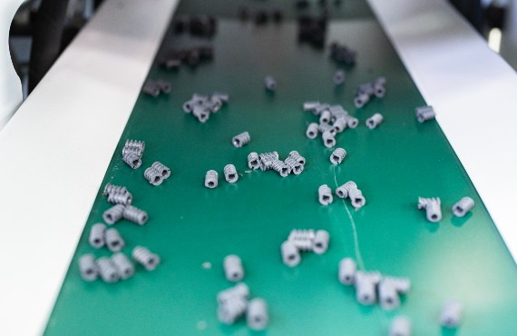
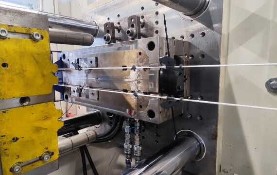
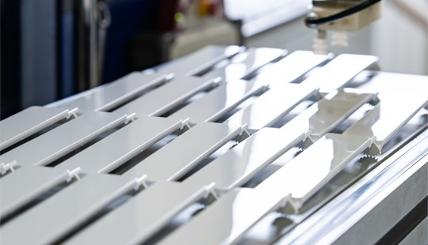
Izdelujemo osnovne sestavne dele za vodne tehtnice in zidarske letve. Brizgani izdelki iz PP, ABS, PE in POM.
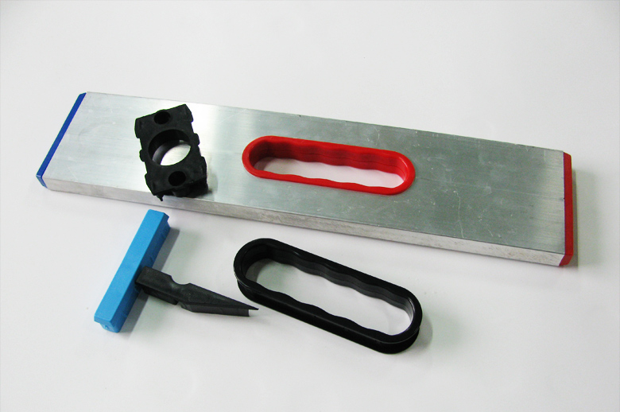
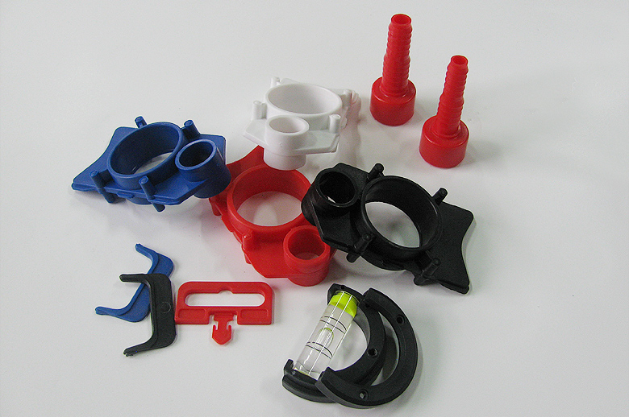
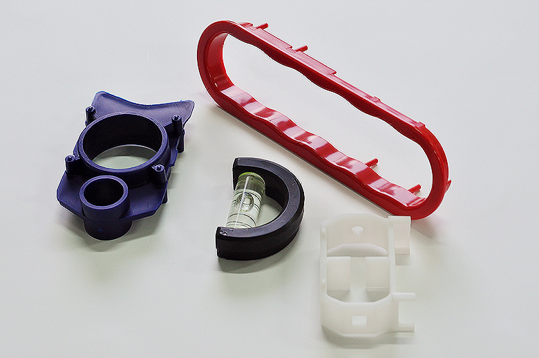
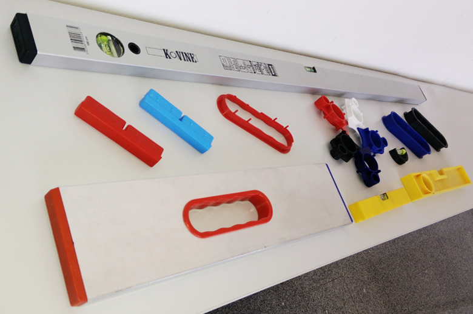
Naši izdelki se uporabljajo za sestavljanje kopalnih kadi, namenjenih invalidom. Brizgani in kromirani izdelki iz ABS.
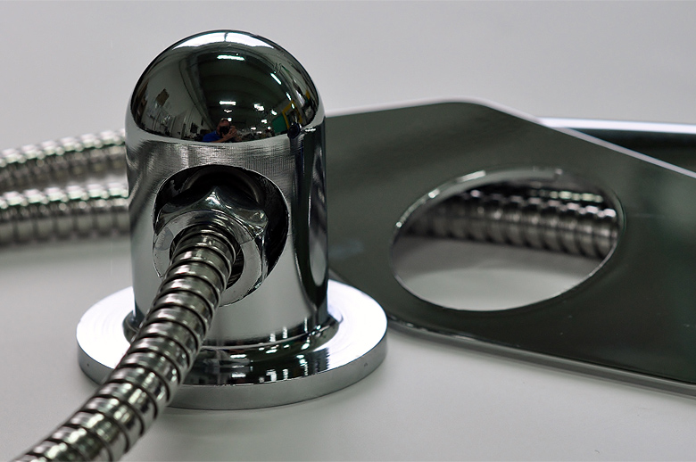
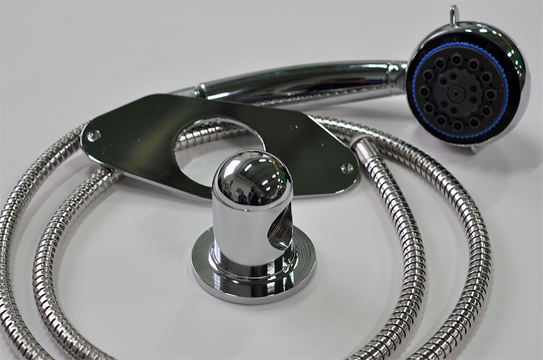
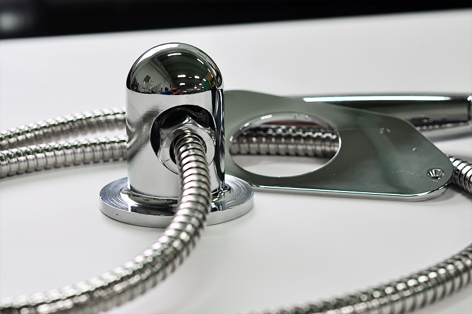
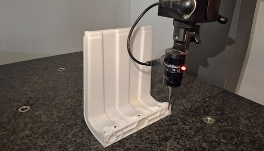
Izdelki, ki so na trgu uspešno prisotni. Na naše muholovce vam lahko nabrizgamo tudi vaš logotip.
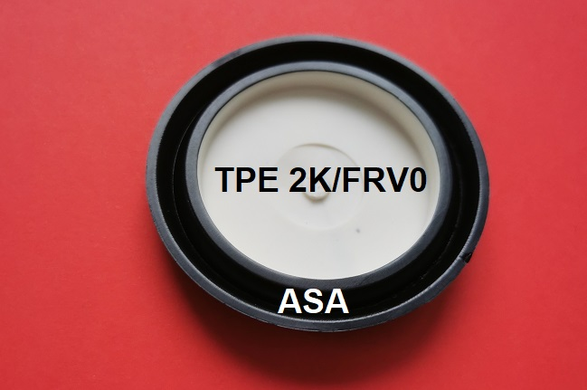
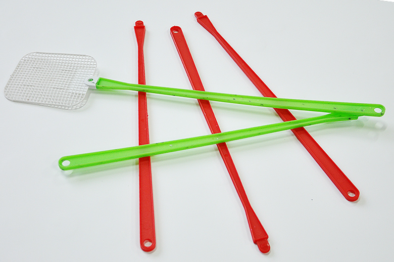
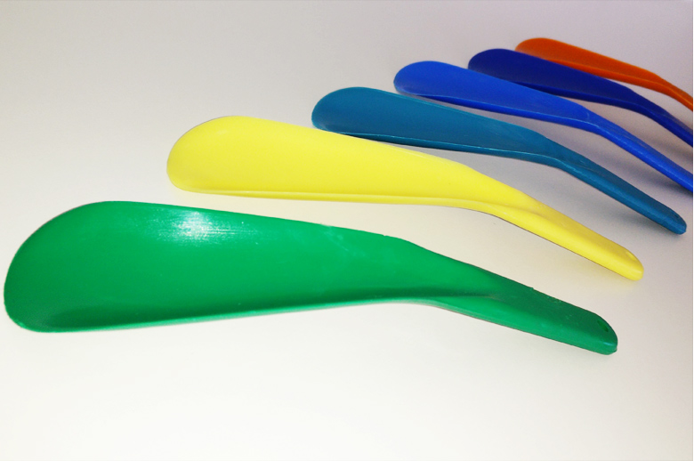
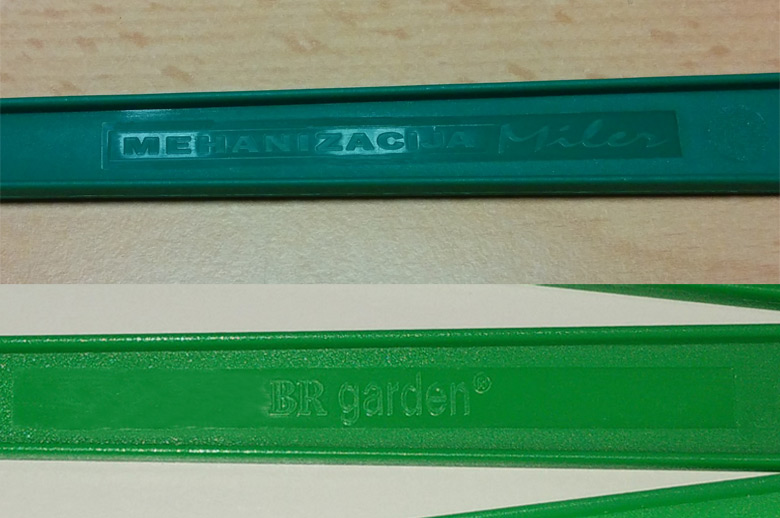